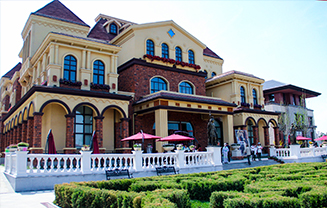
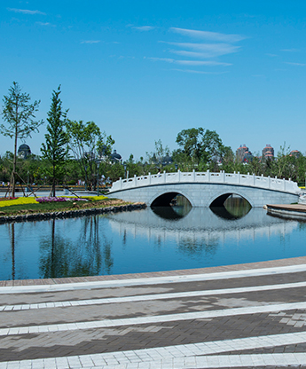
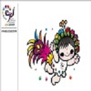

走进世园

2010年10月6日9时，在韩国顺天市举行的国际园艺生产者协会第62届年会上，河北省唐山市获得了2016年世界园艺博览会的承办权。唐山成为我国第一个承办世界园艺博览会的地市级城市，是世界园艺博览会首次利用采煤沉降地，在不占用一分耕地的情况下举办世界园艺博览会。 2016年恰逢唐山抗震四十周年，在唐山南湖举办世园会，可以向世人展示唐山抗震重建和生态治理恢复成果，表明唐山人民保护环境、修复生态、实现资源型城市转型和可持续发展的决心。
园区新闻
- 英雄的城市，爱的传递永不停歇2016-12-05
- 焦彦龙谈唐山如何加快建设国际化沿海强市2016-12-13
- 2017唐山南湖春节灯会灯组已基本完成2016-12-29
- 唐山南湖春节灯会开门爆满2017-01-10
- 省委省政府召开深化机关作风整顿大会2017-02-04
- 南湖春来早 美景迎客来2017-03-17
- 唐山市特殊教育学校师生参观风筝风车节 2017-03-31
内容通知
- [中国园林网]从世园看资源型城市与发展2016-06-03
- [光明网]近百家旅行社看好唐山世园会商机2016-06-06
- [新华网]唐山世园会：三大基石铺坦途2016-07-13
- [新华社]坚不可摧的中国力量2016-07-28
- [人民网]回望唐山大地震走过四十年2016-08-01
- [人民网]促京津冀文化产业协同发展 2016-08-12
园区景象

国际园
花与生活

小桥流水
世园吉祥物

唐山世园会吉祥物同样由韩美林大师创作完成，名称为“凤凰花仙子”。吉祥物设计与会徽一脉相承，在整体色彩上延续了会徽的设计模式，给人强烈的视觉冲击力。“凤凰花仙子”
整体角色采用人物造型，头戴七彩花冠和凤翎，身穿有会徽图案的霞衣，身后飘着七彩的凤尾，张开双臂，奔跑而来，可爱、灵动呼之欲出，准确诠释了2016唐山世园会“都市与自然·凤凰涅盘”的主题，代表着唐山人民坚强的性格和旺盛的生命力。